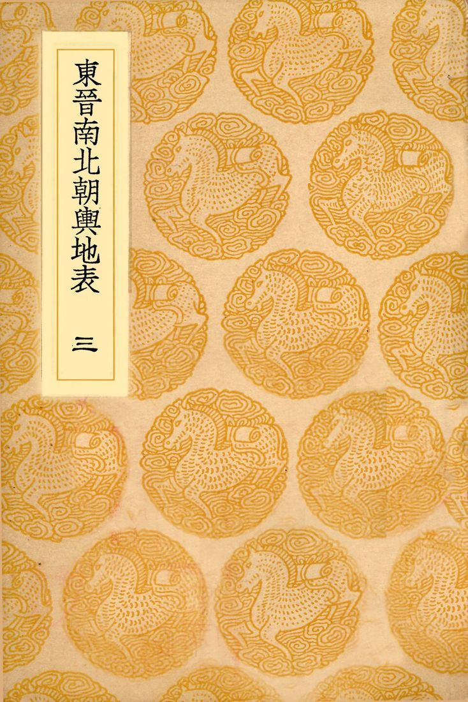
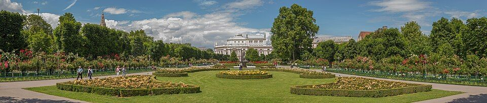
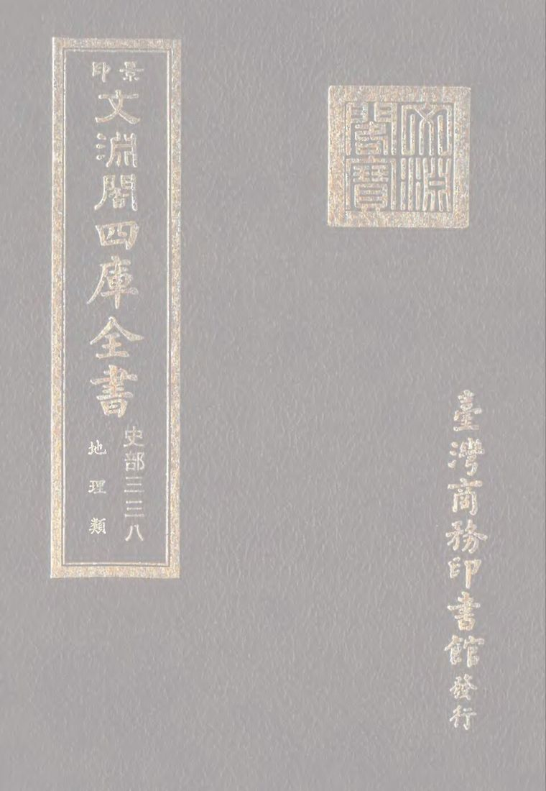

所在河南
适宜季节3 月中旬至 4 月上旬
建议天数2-3 天
资料状态资料待复核
动态信息出行前复核：门票、开放时间与预约规则会变化，请以官方渠道为准。
先看结论4
快速决策索引4
全年月份速查12
1月
- 食物
- 胡辣汤、烩面、羊肉汤、砂锅、烧饼夹牛肉
- 提醒
- 郑州冬天风硬，户外看夜景注意保暖
2月
- 食物
- 胡辣汤、烩面、灌汤包、桶子鸡、烧鸡
- 提醒
- 春节热门景区和博物馆预约紧张，提前订
3月
- 食物
- 胡辣汤、烩面、夜市小吃
- 提醒
- 春季风大，花期受升温和降雨影响
4月
- 食物
- 烩面、锅贴、油馍头、烧烤
- 提醒
- 清明和五一前后热门景区人流上升
5月
- 食物
- 夜市烧烤、凉皮、米皮、烩面、浆面条
- 提醒
- 五一假期景区排队明显，只有河南尽量买早场或两日票
6月
- 食物
- 烧烤、凉皮、烩面、炒凉粉、蜜雪冰城
- 提醒
- 逐渐炎热，白天户外强度不要太高
7月
- 食物
- 夜市、烧烤、凉面、冰粉、冷饮
- 提醒
- 暑期亲子场馆人多，科技馆和博物馆票很紧
8月
- 最适合
- 室内馆、主题乐园夜场、夜市、亲子避暑
- 食物
- 夜市小吃、烩面、烧烤、冷饮
- 提醒
- 暴晒和雷雨都要防，户外尽量放傍晚
9月
- 食物
- 烩面、胡辣汤、烧烤、锅贴
- 提醒
- 中秋国庆前后热门景区要避峰
10月
- 食物
- 羊肉汤、烩面、胡辣汤、灌汤包
- 提醒
- 国庆自驾和热门景区拥堵严重
11月
- 食物
- 胡辣汤、烩面、羊肉汤、砂锅
12月
- 食物
- 胡辣汤、烩面、羊肉汤、烧饼、砂锅
- 提醒
- 风冷明显，户外夜景别安排太久
季节限定景观8

景点营业时间和票价速查8
使用说明
- 以下为常见开放时间和成人基础票价，节假日、夜场、演出、特展会调整
- 免费场馆也可能需要实名预约，热门节假日优先看官方预约页
- 开放式街区、商圈、夜市和公园以公共空间为主，具体店铺和摊位按各自营业为准
博物馆和展馆
- 河南博物院
- 常见 9:00-17:30，16:30 停止入馆，周一闭馆，免费预约
- 郑州博物馆文翰街馆/嵩山路馆
- 常见 9:00-17:00，16:30 停止入馆，周二至周日开放，免费预约
- 郑州商都遗址博物院
- 常见 9:00-17:00，16:30 停止入馆，周一闭馆，免费预约
- 郑州市大河村遗址博物馆
- 常见 9:00-17:00，周一闭馆，免费预约；以馆方公告为准
展开其余 6 项
- 河南省科技馆
- 常见 9:30-17:00，周三至周日开放，免费预约；影院/特展可能另计
- 河南自然博物馆
- 常见 9:00-16:30，周一闭馆，免费预约；以馆方公告为准
- 郑州二七纪念塔/二七纪念馆
- 常见 9:00-17:00，周一闭馆，免费预约
- 黄河博物馆
- 常见 9:00-17:00，周一闭馆，免费预约；以馆方公告为准
- 郑州美术馆
- 常见 9:00-17:00，周一闭馆，免费；特展/活动以公告为准
- 河南艺术中心/郑州大剧院
- 公共空间按场馆开放，演出票价按具体演出
老城街区和商圈
- 二七广场
- 开放式广场，全天可逛，免费
- 德化街
- 开放式商业街，全天可逛，免费；店铺通常白天到夜间营业
- 油化厂/郑州记忆·油化厂
- 开放式街区，免费；店铺、展览、市集按各自营业/收费
- 健康路夜市
- 夜间摊位为主，免费；摊位营业以当天为准
展开其余 4 项
- 伏牛路/国棉厂周边
- 开放式街区，免费；小吃店和夜宵摊按各自营业
- 二七商圈/大卫城/万象城
- 商圈免费；商场多为 10:00-22:00 左右，以各商场公告为准
- 龙湖里/北龙湖
- 开放式商业街区，免费；店铺按各自营业
- 理在 阅空间
- 书店/阅读空间，营业时间和消费规则以门店当日公告为准
古建和城市历史
- 郑州文庙
- 常见 9:00-17:00，免费或预约参观，以现场公告为准
- 郑州城隍庙
- 常见 9:00-17:00，免费或预约参观，以现场公告为准
- 商城遗址公园/商代城墙遗址
- 开放式遗址公园，免费
郑东新区和城市夜景
- 如意湖/郑东新区 CBD/大玉米外景：开放式城市空间，全天可看，免费
- 千玺广场/大玉米观景和商业部分
- 外景免费，楼内商业/观景/餐饮按各自营业和收费
- 郑州之林
- 开放式公园，通常免费，开放时间以现场公告为准
- 会展中心外景
- 开放式城市空间，免费；展会需按具体展会购票
沉浸文旅和主题乐园
- 只有河南·戏剧幻城
- 营业时间随日期和演出安排变化；成人一日票常见 290 元左右，两日票/夜场/优惠票以官方购票页为准
- 建业电影小镇
- 营业时间随日期和夜场变化；成人票常见 100 元左右，夜场/套票以官方购票页为准
- 郑州海昌海洋公园
- 营业时间随日期变化；成人票常见 280 元左右，优惠票/年卡以官方购票页为准
- 郑州方特欢乐世界/梦幻王国
- 营业时间随日期和夜场变化；成人票常见 280 元左右，套票以官方购票页为准
展开其余 2 项
- 银基动物王国
- 营业时间随日期变化；成人票常见 280 元左右，套票/酒店套票以官方购票页为准
- 银基冰雪世界/水世界
- 营业时间和票价按季节、项目、套票变化，以银基官方购票页为准
公园、自然和露营
- 郑州黄河文化公园
- 常见 8:00-18:00，成人票常见 48 元左右；观光车/索道等项目另计
- 黄河滩地公园
- 开放式公园，通常免费；开放和管控以现场公告为准
- 树右森林帐篷营地
- 营地营业、预约、露营/餐饮收费以商家当日公告为准
- 粉黛园
- 花海/园区开放和票价以具体园区当年公告为准
展开其余 6 项
- 郑州植物园
- 常见 6:00-21:00，免费；花展/温室/活动以公告为准
- 郑州树木园
- 开放式郊野公园，通常免费；开放时间以现场公告为准
- 郑州月季公园
- 开放式公园，通常免费，开放时间以现场公告为准
- 人民公园/碧沙岗公园/紫荆山公园
- 开放式市区公园，通常免费
- 绿博园
- 常见 9:00-18:00，成人票常见 20 元左右；活动票以官方公告为准
- 园博园
- 常见 9:00-18:00，成人票常见 45 元左右；活动/夜场以官方公告为准
登封、开封、洛阳和周边
- 嵩山少林景区
- 常见 8:00-17:00，少林景区成人票常见 80 元；索道、观光车、三皇寨等另计或按套票
- 嵩阳书院
- 常见 8:00-17:00，成人票常见 30 元左右；以嵩山景区公告为准
- 中岳庙
- 常见 8:00-17:00，成人票常见 30 元左右；以嵩山景区公告为准
- 朱仙镇启封故园
- 营业时间和票价随节假日/活动调整，成人票常见 60 元左右，以官方购票页为准
展开其余 5 项
- 清明上河园
- 营业时间随演出和夜场调整，成人票常见 120 元左右；夜游/演出票另计
- 龙门石窟
- 常见 8:00-18:00，成人票常见 90 元；夜游/讲解/交通另计
- 洛阳博物馆
- 常见 9:00-17:00，周一闭馆，免费预约
- 白马寺
- 常见 7:40-18:00，成人票常见 35 元左右
- 巩义石窟寺/康百万庄园/宋陵
- 开放时间和票价按各景区公告，适合出发前单独核对
行前准备3
- 预约和闭馆
- 河南博物院热门，提前预约；通常周一闭馆，节假日可能调整
- 河南省科技馆热门亲子馆，通常需提前实名预约；注意周一周二维护闭馆口径
- 郑州博物馆文翰街馆和嵩山路馆分清，提前预约
- 郑州商都遗址博物院通常周一闭馆，适合和文庙、城隍庙同线
- 二七纪念塔/二七纪念馆通常周二至周日开放，周一闭馆
- 只有河南、建业电影小镇、银基、方特、海昌：演出和营业时间随日期变化，买票前查当天节目表
- 穿搭和装备
- 春秋适合 Citywalk，但风大，带薄外套
- 夏季防晒、遮阳、补水，户外安排早晚
- 冬季风冷明显，夜景和黄河边带厚外套
- 嵩山运动鞋、防风外套、登山杖可选，冬季看雪注意防滑
- 博物馆带身份证件，提前截图预约码
- 交通原则
- 市内地铁加打车够用，二七、郑东新区、河南博物院都适合地铁接驳
- 郑州东站适合住郑东新区、会展中心、CBD、东站周边
- 郑州站适合住二七广场、德化街、火车站周边
- 新郑机场到市区较远，晚到早飞优先住机场或地铁沿线
- 登封/少林寺建议单独一天，自驾、拼车或长途车
- 中牟文旅区只有河南、电影小镇、方特、海昌、绿博园相距不算市中心，适合同片区安排
住宿建议6
- 二七广场/德化街/郑州站
- 适合第一次来、想吃夜市、想看二七塔、郑州站进出
- 优点老城区氛围强，吃喝集中，地铁方便
- 缺点部分街区老旧，人流车流密集
- 关键词二七广场、德化街、人民公园、大卫城、火车站
- 花园路/河南博物院/关虎屯
- 适合主打河南博物院、文博广场、健康路夜市
- 优点吃喝多，离河南博物院近，市区平衡
- 缺点早晚高峰堵
- 关键词农业路、花园路、关虎屯、文博广场、健康路
- 郑东新区/CBD/会展中心/郑州东站
- 适合高铁进出、商务、想住新一点、看大玉米夜景
- 优点酒店新，城市界面好，去东站方便
- 缺点老郑州烟火气弱，去二七和老城区略远
- 关键词郑州东站、会展中心、CBD、如意湖、千玺广场
- 中原区/常西湖/郑州博物馆
- 适合想逛郑州博物馆、郑州科技馆、奥体中心周边
- 优点新馆集中，环境开阔
- 缺点离老城和河南博物院较远
- 关键词文翰街、奥体中心、常西湖、市民公共文化服务区
- 中牟/文旅区
- 适合只有河南、建业电影小镇、方特、海昌、绿博园
- 优点玩主题乐园省通勤
- 缺点不适合作为郑州市区游 base
- 关键词只有河南、电影小镇、绿博园、方特、海昌
- 新密/银基度假区
- 适合银基动物王国、冰雪世界、亲子度假
- 优点度假区内体验完整
- 缺点离市区远，交通成本高
地图分区8
老城二七区
金水花园路/文博区
管城商都区
郑东新区
常西湖/中原区
中牟文旅区
惠济黄河区
登封嵩山
核心景点14
河南博物院
贾湖骨笛、妇好鸮尊、莲鹤方壶、云纹铜禁、武则天金简、青铜器、陶瓷、玉器
- 最佳时间
- 全年，雨天和冬夏尤其适合
- 玩法
- 至少留 2.5-4 小时，建议租讲解或预约人工讲解
- 搭配
- 文博广场银杏、健康路夜市、花园路商圈
- 值不值得专程
- 值得，郑州第一文化核心
- 提醒
- 提前预约，节假日票紧；开放时间以官方公告为准
只有河南·戏剧幻城
麦田、夯土墙、地坑院、李家村剧场、火车站剧场、幻城剧场、小剧场群
- 最佳时间
- 春秋最舒服，夏季优先看夜场/室内剧场
- 玩法
- 一日票适合精华，想看更多小剧场可考虑两日
- 搭配
- 建业电影小镇、绿博园、中牟住宿
- 值不值得专程
- 值得，郑州最强沉浸文旅之一
- 提醒
- 场次、闭园、节目表每天不同，买票前看官方当日安排
郑州商都遗址博物院
早商文明、郑州商城遗址、考古成果、商代城墙
- 最佳时间
- 全年，雨天适合
- 搭配
- 郑州文庙、郑州城隍庙、商城遗址公园
- 值不值得专程
- 喜欢考古和城市历史的人值得
- 提醒
- 通常周一闭馆，提前预约
二七纪念塔/二七广场
郑州地标、京汉铁路工人大罢工历史、老城核心
- 最佳时间
- 晚上看灯，白天进馆看展
- 搭配
- 德化街、人民公园、大卫城、郑州站
- 值不值得专程
- 第一次来值得，之后顺路拍即可
- 提醒
- 纪念馆通常周一闭馆，广场人多注意随身物品
油化厂/郑州记忆·油化厂
工业风、街区拍照、咖啡、餐饮、展览活动
- 最佳时间
- 下午到晚上
- 搭配
- 二七商圈、郑州博物馆、夜市
- 值不值得专程
- 喜欢拍照和年轻街区值得
- 提醒
- 店铺更新快，出发前看近期营业和活动
郑东新区 CBD/大玉米/如意湖
大玉米夜景、如意湖、会展中心、河南艺术中心、城市天际线
- 最佳时间
- 傍晚到晚上
- 搭配
- 郑州东站、会展中心、商场吃饭
- 值不值得专程
- 夜景值得，白天不必久留
郑州博物馆
郑州历史脉络、商代文明、地方文物、非遗展
- 最佳时间
- 全年，雨天适合
- 搭配
- 郑州科技馆、奥体中心、郑州美术馆
- 值不值得专程
- 时间充裕或住中原区值得
- 提醒
- 文翰街馆和嵩山路馆分清
河南省科技馆
宇宙天文、动物家园、童梦乐园、人工智能、特效影院
- 最佳时间
- 全年，亲子和雨天尤其适合
- 搭配
- 郑东新区、河南自然博物馆
- 值不值得专程
- 亲子强烈值得
- 提醒
- 非常热门，提前抢预约
河南自然博物馆
恐龙、古象、地质矿物、生物演化
- 最佳时间
- 全年
- 搭配
- 河南省科技馆、郑东新区
- 值不值得专程
- 亲子和自然爱好者值得
大河村遗址博物馆
仰韶文化、史前聚落、彩陶、遗址保护展示
- 最佳时间
- 全年
- 搭配
- 郑东新区/北龙湖一带
- 值不值得专程
- 考古爱好者值得
郑州文庙
古代州学和孔庙、老城历史
- 最佳时间
- 全年，上午或下午
- 搭配
- 商都遗址博物院、城隍庙、东大街
- 值不值得专程
- 适合历史线顺路
郑州城隍庙
古建筑、老城气质、民俗
- 最佳时间
- 全年，和文庙同线
- 搭配
- 文庙、商都遗址博物院
黄河文化公园
黄河、炎黄二帝塑像、黄河地貌、开阔景观
- 最佳时间
- 春秋、秋日傍晚、冬季晴天
- 搭配
- 黄河滩地公园、惠济黄河边、树右森林帐篷营地
- 值不值得专程
- 想看黄河值得
- 提醒
- 景区较分散，自驾体验更好
少林寺/嵩山
少林寺常住院、塔林、武术表演、三皇寨、嵩山地质景观
- 最佳时间
- 春秋、10-11 月秋色、雪后冬景
- 搭配
- 嵩阳书院、中岳庙、登封住宿
- 值不值得专程
- 值得，适合单独一天
- 提醒
- 不要把登封和郑州市区太多点塞进同一天
街区、商圈和夜市8
德化街
老牌商业街、二七商圈、逛吃
- 最佳时间
- 下午到晚上
- 搭配
- 二七塔、大卫城、郑州站
健康路夜市
本地夜市、小吃密度高
- 最佳时间
- 晚上
- 搭配
- 河南博物院、文博广场、花园路
- 提醒
- 摊位和热度变化快，出发前看当天营业
伏牛路/国棉厂周边
老郑州生活气、夜宵、小吃
- 最佳时间
- 晚上
- 玩法
- 适合本地烟火气路线
二七商圈
二七塔、德化街、大卫城、万象城、老城区人流
- 最佳时间
- 下午到晚上

油化厂创意街区
工业风、咖啡、拍照、活动、市集
- 最佳时间
- 下午到晚上
理在 阅空间
- 类型
- 阅读空间/书店/文艺休息点
- 适合
- 看书、休息、拍照、慢节奏约会
- 搭配
- 按实际位置和当天商圈路线安排
龙湖里/北龙湖
新郑州商业街区、湖景、餐饮
- 最佳时间
- 傍晚到晚上
- 搭配
- 郑东新区、河南省科技馆
砂之船奥莱/杉杉奥莱/华润万象城/大卫城
吃饭、购物、临时替换户外行程
- 最佳时间
- 夏季避暑、冬季避寒、雨天
市场和市井5
菜市场方向
早餐、胡辣汤、油馍头、包子、烧饼
- 提醒
- 郑州不如昆明那类旅游型农贸市场强，更多是本地生活气，按住宿附近找即可
健康路夜市
- 可吃
- 烤串、炸串、烤冷面、炒凉粉、鸡蛋灌饼、臭豆腐、小龙虾季节摊
德化街/二七小吃
- 可吃
- 烩面、锅贴、热干面式小吃、炸串、甜品饮品
老城区早餐
- 可吃
- 胡辣汤、油馍头、水煎包、菜角、包子、豆腐脑
伴手礼购买
- 烩面半成品
- 胡辣汤料包
- 新郑红枣
- 少林寺素饼/登封特产
展开其余 4 项
- 开封花生糕
- 道口烧鸡
- 河南博物院文创
- 蜜雪冰城周边
美食总表5
必吃特色
- 烩面
- 郑州代表性主食，羊肉汤底和宽面是核心
- 胡辣汤
- 早餐核心，配油馍头/水煎包
- 葛记焖饼
- 郑州老字号方向，适合想吃本地传统
- 合记烩面
- 老字号方向，适合带外地朋友吃
展开其余 8 项
- 方中山胡辣汤
- 重口胡辣汤代表，排队和口味都比较强
- 蔡记蒸饺
- 老字号小吃方向
- 水煎包
- 早餐常见
- 油馍头
- 配胡辣汤
- 菜角
- 早餐油炸类
- 炒凉粉
- 夜市常见
- 羊肉汤/牛肉汤
- 秋冬适合
- 烧饼夹牛肉
- 登封、少林寺周边也常见
河南周边联动美食
- 开封灌汤包
- 桶子鸡
- 花生糕
- 洛阳水席
展开其余 3 项
- 登封焦盖烧饼
- 新郑红枣
- 道口烧鸡
夜宵
- 烧烤
- 炸串
- 炒凉粉
- 小龙虾
展开其余 3 项
- 涮牛肚
- 砂锅
- 麻辣烫
饮品
- 蜜雪冰城
- 郑州本土品牌，可以作为城市彩蛋
- 眷茶/本地茶饮
- 路过可买
- 商场奶茶/饮品店
- 逛街或看展后顺路买，具体门店按当天所在商圈确认
甜食和伴手礼
- 花生糕
- 枣糕
- 麻叶
- 江米条
- 河南博物院文创雪糕/文创
餐厅和店铺7
釜汀韩式无限自助烤肉
- 类型
- 韩式烤肉自助
- 适合
- 轻松聚餐、肉类自助、商场吃饭
- 提醒
- 出发前确认具体门店、价格、排队和营业
合记烩面
- 类型
- 郑州老字号烩面
- 适合
- 第一次吃郑州烩面
方中山胡辣汤
- 类型
- 胡辣汤代表
- 适合
- 能接受胡椒和重口的人
- 提醒
- 口味冲，不一定人人适应
葛记焖饼
- 类型
- 老字号焖饼
- 适合
- 想吃传统郑州味
蔡记蒸饺
- 类型
- 老字号小吃
- 适合
- 早餐/午饭
萧记三鲜烩面
- 类型
- 烩面方向
- 适合
- 想多试几家烩面时加入
本地羊肉汤/牛肉汤店
- 类型
- 秋冬早餐或晚饭
- 选择
- 看住宿附近高分老店，别为了一碗汤跨城
博物馆和展馆10
河南博物院
- 类型
- 省级顶级博物馆
- 重点
- 中原文明、青铜器、镇馆之宝
- 时间
- 至少半天
郑州博物馆
- 类型
- 城市综合博物馆
- 重点
- 郑州历史、商都文明、城市脉络
- 分馆
- 文翰街馆、嵩山路馆
郑州商都遗址博物院
- 类型
- 商代都城遗址主题
- 重点
- 郑州商城、早商文明
郑州市大河村遗址博物馆
- 类型
- 史前遗址
- 重点
- 仰韶文化、彩陶、遗址
河南省科技馆
- 类型
- 科技馆/亲子馆
- 重点
- 互动展项、天文、人工智能、儿童科学
河南自然博物馆
- 类型
- 自然科学
- 重点
- 恐龙、地质、古象、矿物
郑州二七纪念馆
- 类型
- 红色纪念馆
- 重点
- 京汉铁路工人大罢工、二七塔
黄河博物馆
- 类型
- 黄河文化和治黄历史
- 搭配
- 黄河文化公园/黄河边
郑州美术馆
- 类型
- 美术展馆
- 搭配
- 郑州博物馆、奥体中心、郑州大剧院
河南艺术中心/郑州大剧院
每次出发前看当期演出
- 类型
- 演出场馆
亲子和主题乐园9
河南省科技馆
- 适合
- 亲子、科学互动、雨天避暑
- 提醒
- 提前抢预约
河南自然博物馆
- 适合
- 恐龙、地质、自然科普
郑州海昌海洋公园
- 适合
- 亲子、海洋动物、演艺、夏季室内外结合
- 位置
- 中牟文旅区
- 提醒
- 动物表演和开放项目以当天为准
银基动物王国
- 适合
- 亲子、动物、游乐设备、度假区
- 位置
- 新密银基国际旅游度假区
- 提醒
- 离市区远，适合单独一天或住度假区
银基冰雪世界
- 适合
- 夏季避暑、冬季亲子、冰雪体验
郑州方特
- 适合
- 主题乐园、亲子、年轻人
- 位置
- 中牟绿博片区
- 提醒
- 营业时间和夜场按官方公告
建业电影小镇
- 适合
- 拍照、演艺、民国风街区、夜场
- 搭配
- 只有河南、绿博园
绿博园
- 适合
- 春季赏花、亲子散步、园林
- 搭配
- 方特、电影小镇、只有河南
园博园
- 适合
- 园林、亲子、春秋散步
- 提醒
- 面积大，别和太多点硬塞
自然、公园和露营11
郑州黄河文化公园
黄河、炎黄二帝塑像、开阔地貌
- 最佳时间
- 春秋、秋日傍晚
黄河滩地公园
芦苇、黄河边、骑行/散步
- 最佳时间
- 秋季、傍晚
- 提醒
- 注意安全，不去未开放滩地
树右森林帐篷营地
- 适合
- 露营、拍照、轻度户外
- 提醒
- 露营地营业、预订、天气和装备要求出发前确认
粉黛园
- 最佳时间
- 9-10 月粉黛乱子草季
- 适合
- 拍照、秋季花海
- 提醒
- 确认具体地点和当年开放状态
郑州植物园
樱花、牡丹、芍药、科普、亲子
- 最佳时间
- 3-5 月花季、10-11 月秋色
郑州树木园
树木、郊野感、轻徒步
- 最佳时间
- 春季赏花、秋季红叶
郑州月季公园
月季、市花主题
- 最佳时间
- 4 月下旬至 5 月

人民公园
- 最佳时间
- 春季花、11 月银杏、日常散步
- 搭配
- 二七广场、德化街
碧沙岗公园
老公园、绿地、城市散步
- 最佳时间
- 春秋
紫荆山公园
市区公园、顺路散步
- 最佳时间
- 春秋

郑州之林
- 最佳时间
- 秋季银杏、郑东新区夜景前后
- 搭配
- CBD、如意湖
远郊和周边一日7
登封少林寺/嵩山
- 适合
- 历史文化、山景、武术、古建
- 时间
- 完整一天
- 推荐
- 少林寺、塔林、武术表演、三皇寨
- 延伸
- 嵩阳书院、中岳庙
- 提醒
- 强度可大可小，三皇寨徒步量不小
开封一日
- 适合
- 宋文化、夜市、小吃
- 推荐
- 清明上河园、龙亭、开封府、鼓楼夜市/书店街、万岁山
- 食物
- 灌汤包、桶子鸡、花生糕、炒凉粉
- 提醒
- 节假日开封人非常多
朱仙镇启封故园
- 位置
- 开封市朱仙镇，郑州出发约 1 小时级别
- 适合
- 古镇、年画、宋韵/民俗风格
- 搭配
- 开封一日游
洛阳一日
- 适合
- 龙门石窟、洛阳博物馆、白马寺、隋唐洛阳城
- 推荐
- 高铁往返更省心
- 提醒
- 牡丹季和节假日住宿/门票紧张
巩义一日
历史遗迹和古建
- 适合
- 石窟寺、康百万庄园、宋陵
新郑一日
黄帝文化和郑韩历史
- 适合
- 黄帝故里、郑韩故城、新郑博物馆、红枣
荥阳/古柏渡
- 适合
- 春季樱花、黄河边、轻郊游
- 提醒
- 花期强相关，错季价值下降
路线模板14
交通细节6
- 郑州东站
- 高铁主站，适合住郑东新区、CBD、会展中心
- 去河南博物院、二七广场可地铁接驳
- 郑州站
- 老火车站，离二七广场近
- 周边人流复杂，住宿注意选择正规酒店
- 新郑机场
- 到市区距离较远
- 机场城际/地铁/打车都可，晚到早飞优先住机场或南部地铁沿线
- 市区地铁
- 二七广场老城核心换乘
- 关虎屯/农业路附近河南博物院方向
- 会展中心/中央商务区郑东新区夜景
- 郑州东站高铁和新城方向
- 绿博园/中牟方向先查最新线路和末班车
- 去只有河南/电影小镇/方特/海昌
- 建议打车、自驾、景区接驳或地铁加打车
- 晚场结束返程要提前约车
- 去少林寺/登封
- 自驾最灵活
- 公共交通需预留换乘时间
- 节假日不要卡末班返程
避坑和取舍9
不要低估预约难度
- 河南博物院、河南省科技馆、热门博物馆节假日票很紧
不要把只有河南当普通景点随便逛
- 它主要看剧场和动线，提前看节目表体验差别很大
不要一天硬塞郑州市区、只有河南、少林寺
- 三者方向和耗时都不同
不要只按短视频最低价和最美图判断
- 夜市摊位、主题乐园活动、花期、灯光都动态变化
不要夏季中午长时间户外
- 郑州夏天热，户外放早晚
不要冬季轻装去黄河边和嵩山
- 风大且冷，体感比市区更低
不要错季追花
- 樱花、月季、银杏、红叶都有短窗口
不要在火车站周边随便跟拉客
- 住宿、包车、景区票都走正规平台
不要把郑州美食想象成精致打卡型
- 郑州更偏主食、汤饭、夜市和老店，重在实在